We have seen previously that some systems of equations can have many solutions.
For the rational, real and complex fields, we
have either only one or an infinite number of solutions if any solutions exist.
For example, when we had intersecting lines
we had only one solution, the point where they crossed. If the lines were coincident then
any point on either line was a solution. In this case either equation could be used to express the solutions
for this system. Things got a little more complicated when we talked about planes intersecting.
We saw that two planes could intersect at a point or a line. The planes could also be coincident.
When we have an infinite number of solutions, like when two planes intersect at a line,
we give an equation as an answer, in this case the equation of the line.
In order for a system of linear equations to have a unique solution we must have
the same number of variables as we have equations. This is a necessary condition but it
is not a sufficient condition. A system of linear equations with the same number
of variables as equations could still have an infinite number of solutions. How do we
know when a solution is unique? How do we express the solutions if there are an infinite
number?
We start to answer the above questions by introducing the rank of a matrix.
Definition 2..4Suppose we have a matrix
and another matrix
in reduced row
echelon form such that
is row equivalent to
, then the rank of
is
simply the number of rows of
that contain leading entries.2.4
If we had an
matrix
such that the rank of
equaled
, then
we would have a unique solution given by column 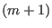
of the reduced row echelon matrix
that was row equivalent to
.
If the rank is smaller than
, we have many solutions. Let's consider one
such case. Say we have the system
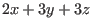
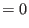
This system represents two planes. Its associated matrix would be
This matrix takes the reduced row echelon form
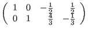
Which corresponds to
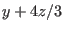
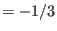
We can use a little algebra to solve for
and
in terms of
.
and
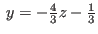
For any given
we can now easily calculate
and
values. Say we
have an arbitrary scalar
(in this case
since we are talking about
planes). Let 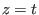
and we have the solutions
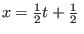
,
and
This variable
is called a parameter.
Of course the solutions for some systems can have more than one parameter. Consider the
system
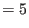
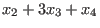
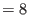
We can allow
and 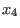
to be any numbers in the reals (which happens to be the field
we are interested in at the moment). To give the solutions we must introduce two
parameters
and
which represent any real numbers. We let
and 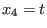
so that we get
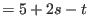
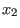
We can write out the solution as a matrix of one column
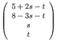
where the row indices correspond to the indices of the variables 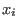
.
Problems 2.4
Given a matrix
, give a formula for the number of parameters
you would need for a solution. (HINT: Assume that the rank of
is equal to
.)
Consider the system of linear equations
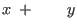
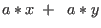
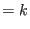
where
and
are constants.
What value must
have for the system to have no solution?
Infinitely many solutions? Can it have exactly one solution? (HINT: find
the reduced row echelon form of the associated matrix. Whenever we have a reduced row
echelon matrix equivalent to a linear system of equations such that there is a row
which has all zeros for the coefficients but otherwise has one or more non-zero entries,
we say the system is inconsistent
and has no solution.)
Consider the system of linear equations
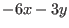
where
and
are variables.
What values must
and
have for the system to have solutions?
(HINT: find
the reduced row echelon form of the 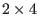
associated matrix
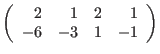
Then interpret the non-zero entries of the bottom row as coefficients
for an equation using
and
as variables. Show how
and
must be related for
the system to be consistent.)
Assume that the following system is in the binary number field.
Give the list of parameters as a matrix. How many unique solutions are there?
What are they?
Exercises 2.4
Solve the following problems by introducing parameters. Unless otherwise
stated, assume that the systems are over the reals (all scalars
).
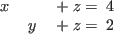
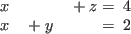
For each of the previous exercises choose a value for the
parameter and use Lamp to graph the resulting system. Change the
parameter and observe what happens. Choose another value and postulate
what will happen before you graph the new systems.
A wine company wants to create a product that has
percent alcohol by
blending together three wines which have alcohol contents of
,
and
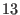
percent, respectively. How much of each type of wine will go into one bottle?
(HINT: give each of the volumes of the three wines a variable name, say
,
and
.
So we know
because this would give us the desired percentage of alcohol. We also
know that
because the total volume of the three wines must equal the volume of one
bottle of the blended wine.
Now use parameters to solve this system. Notice that the parameter you
calculate has limits on its values in order to give sensible answers.
What values can the parameter have?)